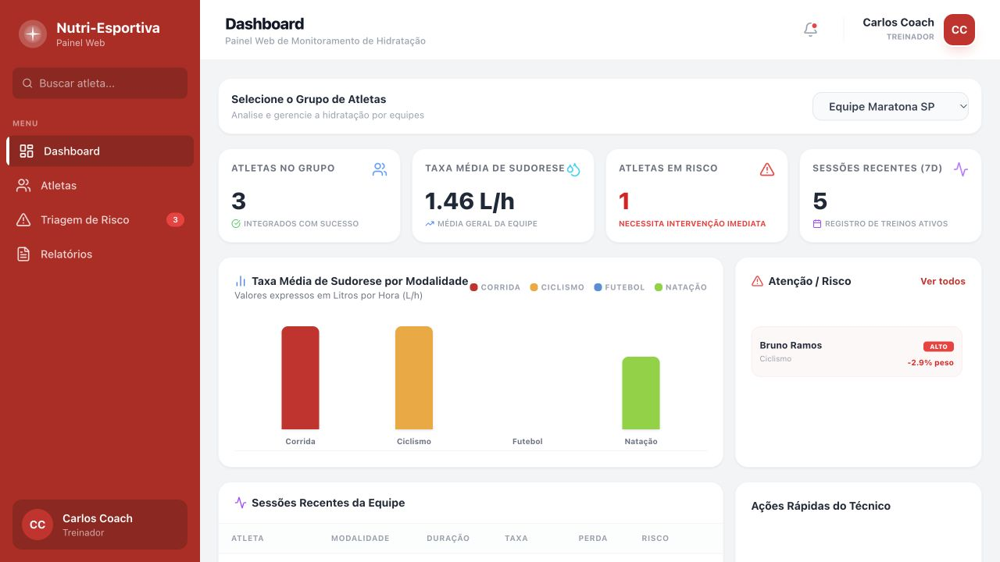

CUSTTA. / PWATelas do produto
Lista de obras · Detalhes · Gráficos — toque para ampliar
01 / FOUNDER & iOS DEVELOPERcustta.
Clareza sobre o custo de cada obra. Um produto para acompanhar gastos e entender o lucro real, com experiência offline e sincronização na nuvem.
SwiftUIFirebasePWAGitHub Actions
Da arquitetura à marca: desenvolvimento iOS e web, contas de usuário e preparação para lançamento na App Store.
NUTRI ESPORTIVA / WEBReact + Vite

Interface real · dados de demonstração — toque para ampliar
02 / PRODUCT OWNERNutri Esportiva
Do planejamento à experiência: direção de produto para um aplicativo de acompanhamento de sessões esportivas, definindo funcionalidades e prioridades.
React / VitePrisma / SQLiteJWTFigma
Prototipação da interface e orientação do desenvolvimento de uma aplicação com banco de dados e autenticação. Jan — Jun 2026.
Explorar código ↗
03 / FULL-STACK DEVELOPMENTAprender, em imagens.
Aplicação de geração de imagens educacionais com IA, desenvolvida em parceria com o Poliedro. Uma ponte entre conteúdo, imaginação e aprendizado.
Flutter / DartTypeScriptAI APIs
Desenvolvimento do aplicativo multiplataforma e da API, integrando o fluxo de geração de imagens de ponta a ponta. Jul — Dez 2025.